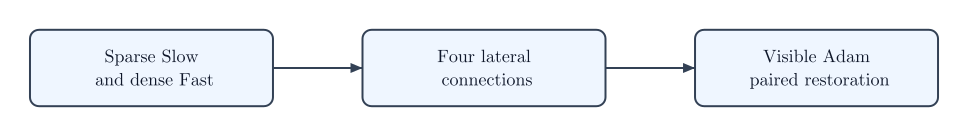
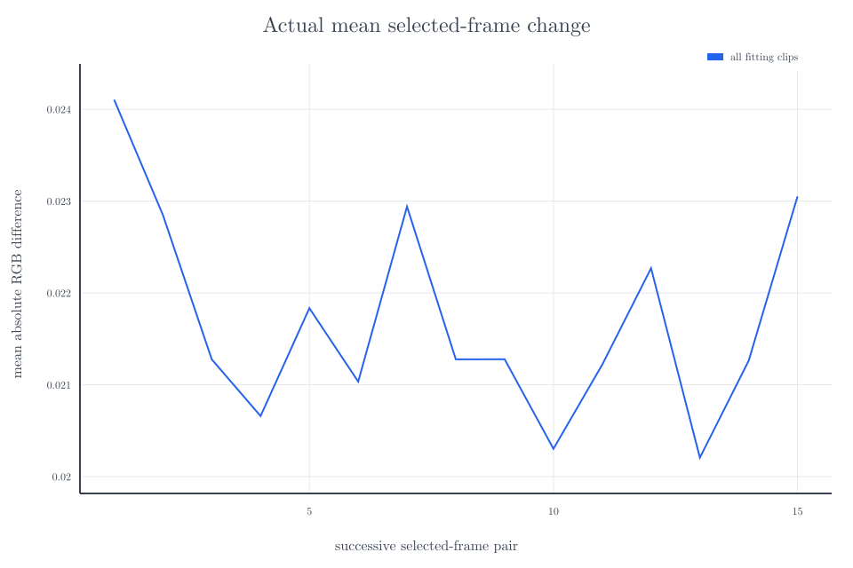
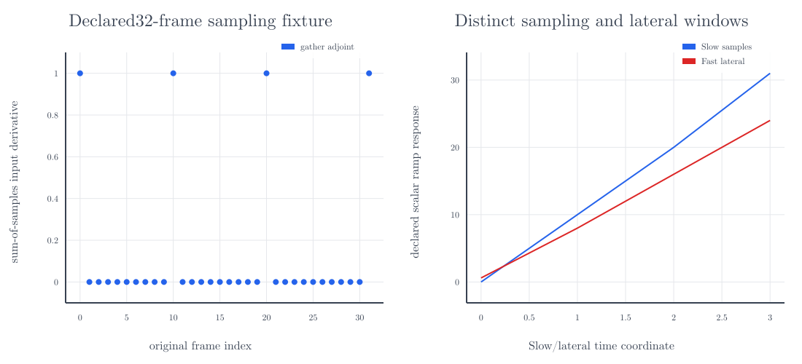
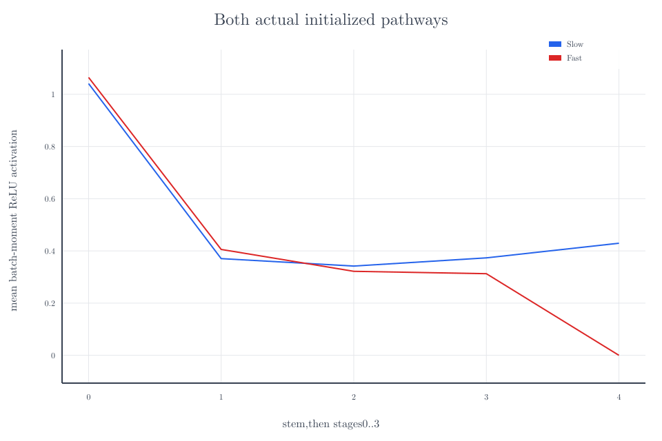
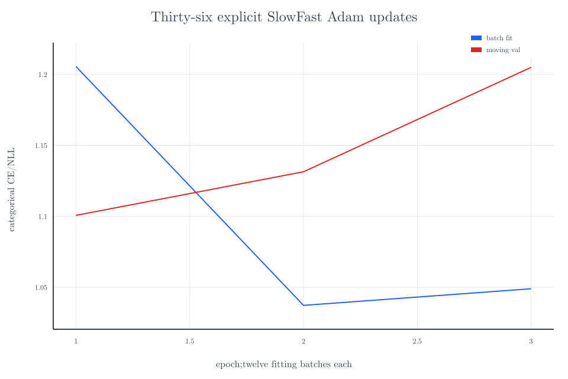
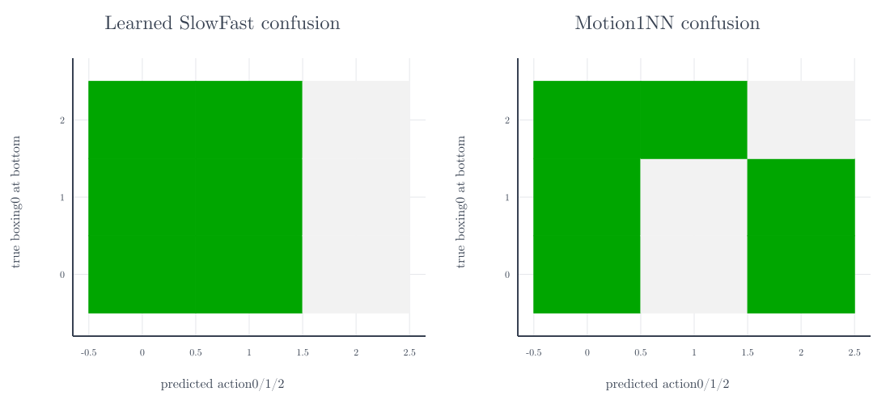
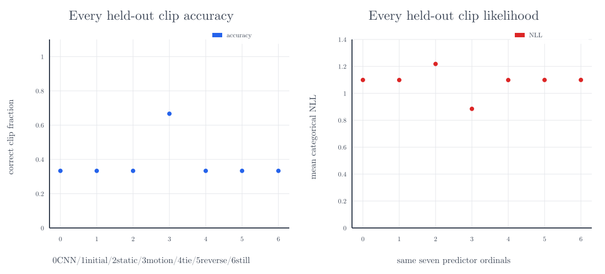
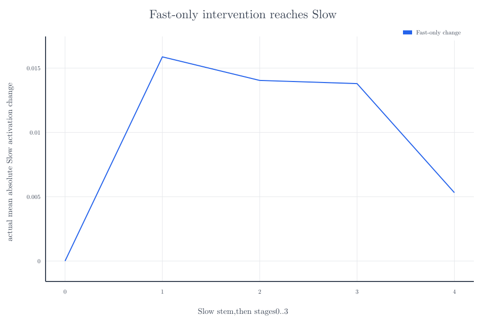
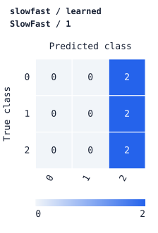

SlowFast:two complete pathways and visible tensor Adam
Abstract
Action recognition must combine appearance and temporal variation in actual video. Two complete R50 pathways process sparse and dense observations;the report exposes all tensor optimizer updates,zero residual gates and direct Fast-to-Slow interventions on original KTH clips.
Source example: examples/cpp/source/nn/1_convolutional_neural_networks/1.10_3d_and_video_convolutions/slowfast.cpp.
The method
The Slow path receives endpoint-inclusive sparse observations;the Fast path retains every selected observation with1/8the channels. Four learned temporal projections carry Fast features into Slow by channel concatenation. Both paths retain sixteen bottlenecks. For a residual branch y=ReLU(skip+gamma*BN(conv)+beta),gamma0 initializes an identity/projection route while gamma and beta can open the branch during fitting.
The visible Adam loop optimizes every learned leaf;moving BN arrays are updated by fitting forwards and restored with the matching learned checkpoint. Compact execution and the analytical full-reference census are labelled separately.
The concept diagram below is drawn by dm::graphics::Diagram. Its editable C++
source is the complete block below; regeneration uses the same datamunge toolchain
as the numerical examples. Exports consume the saved local SVG.
#include <dm/dm.hpp>
int main() {
std::filesystem::create_directories("build");
dm::graphics::Diagram diagram;
diagram.node("n0", {0.0, 0}, "Sparse Slow\n and dense Fast");
diagram.node("n1", {5.2, 0}, "Four lateral\n connections");
diagram.node("n2", {10.4, 0}, "Visible Adam\n paired restoration");
diagram.edge("n0", "n1").edge("n1", "n2");
diagram.save_svg("build/slowfast_concept.svg");
}
Executed tensor architecture
This figure executes the inference configuration shown in the code, using a zero-valued shape probe without fitting or loading a checkpoint. Named stage boundaries group whole subgraphs where available; other nodes retain functional-layer detail. Exact batch-inclusive shapes and reachable parameter totals come from the trace. Shared linear scales map spatial dimensions and channel counts to blocks; the one-pixel visibility floor is disclosed in the legend. Labels use compact monospace text, rotate counterclockwise and sit beside their own glyphs. Arrows flow left to right; wide diagrams scroll at native size on the website.
#include <dm/dm.hpp>
int main() {
namespace n = dm::nn;
namespace m = n::models;
n::set_num_threads(2);
std::filesystem::create_directories("build");
const m::SlowFastConfig c{8, 3, 16};
n::ParameterStore p(751), state(753);
n::Generator dropout(743);
n::Module architecture_model(
[&](const n::Tensor& image) { return m::SlowFast(p, state, image, c).logits; },
"SlowFast:two complete pathways and visible tensor Adam");
n::ModelPlotOptions options;
options.style = n::ModelPlotStyle::Flow;
options.detail = n::ModelPlotDetail::Blocks;
options.labels = {.type = n::ModelPlotLabel::NameAndShape, .size = 12, .wrap = 24};
options.spacing = {.layer = 24, .lane = 12, .label = 8, .margin = 20};
options.sizing.spatial_size = 96;
options.sizing.channel_size = 42;
options.sizing.minimum_extent = 1;
options.opacity = .8;
const auto diagram = architecture_model.plot(n::zeros({1, 16, 32, 32, 3}), options);
diagram.save_svg("build/slowfast_architecture.svg");
std::print(
"{} displayed nodes; {} reachable learned values.\n",
diagram.nodes().size(),
diagram.parameter_count());
}492 displayed nodes; 533524 reachable learned values.

Original video observations
Use the same24/6/6 genuine KTH clips as C3D and I3D:boxing0,handclapping1, handwaving2;scenario1,people1..4 fitting,5 validation,6 held out. Original annotations supply the first two segments per video;16unique original frames span each segment. These selected observations are not necessarily adjacent in the recording. FFmpeg decodes only;Float32 tensor bilinear resize32px and /255 produce RGB. The original-video mirror is pinned to 7076149bdbeff8d70003a68d6291fd080db44683 because the official server was unavailable. Source hashes,annotations,person/video/segment IDs and selected frame IDs remain in the preparation manifest. This is a custom tiny subset,not a benchmark split.
#include <dm/dm.hpp>
int main() {
const std::filesystem::path cache = dm::datasets::data_home();
dm::datasets::prepare_example_data("video", (cache / "action_video").string());
}Show all96held-out frames,including both raw Slow samples at the endpoints.
#include <dm/dm.hpp>
int main() {
namespace n = dm::nn;
namespace m = n::models;
n::set_num_threads(2);
std::filesystem::path cache;
if (const auto *p = std::getenv("DATAMUNGE_DATA_DIR"))
cache = p;
else if (const auto *p = std::getenv("XDG_CACHE_HOME"))
cache = std::filesystem::path(p) / "datamunge/datasets";
else
cache = std::filesystem::path(std::getenv("HOME")) / ".cache/datamunge/datasets";
std::filesystem::path root = cache / "action_video";
if (const auto *p = std::getenv("DATAMUNGE_VIDEO_DIR"))
root = p;
else
dm::datasets::prepare_example_data("video", root.string());
const auto pools = m::LoadVideo(root);
const auto &fit = pools[0];
const auto &validation = pools[1];
const auto &test = pools[2];
std::print("| gallery row | action0boxing/1clapping/2waving | person | original video | "
"original segment |\n|---:|---:|---:|---:|---:|\n");
const auto labels = test.labels.to_vector<int>(), people = test.person.to_vector<int>(),
videos = test.video.to_vector<int>(), segments = test.segment.to_vector<int>();
for (int row = 0; row < test.size(); ++row)
std::print("| {} | {} | {} | {} | {} |\n", row, labels[row], people[row], videos[row],
segments[row]);
const auto delta =
n::mean(n::abs(n::slice_axis(fit.rgb, 1, 1, 16) - n::slice_axis(fit.rgb, 1, 0, 15))
.to(n::DType::Float64),
{2, 3, 4});
auto plot = dm::graphics::RPlot::create();
plot.lines(n::arange(1, 16).to_vector<double>(), n::mean(delta, {0}).to_vector<double>(),
"all fitting clips", {37, 99, 235})
.title("Actual mean selected-frame change")
.x_label("successive selected-frame pair")
.y_label("mean absolute RGB difference");
plot.save_svg("build/slowfast_data_motion.svg");
std::filesystem::create_directories("figures");
std::filesystem::copy_file("build/slowfast_data_motion.svg",
"figures/slowfast_data_motion.svg",
std::filesystem::copy_options::overwrite_existing);
n::save_image_grid(test.rgb.reshape({96, 32, 32, 3}), "build/slowfast_data.png", 16, 0, 1, 2,
0, 2);
}| gallery row | action0boxing/1clapping/2waving | person | original video | original segment |
|---|---|---|---|---|
| 0 | 0 | 6 | 5 | 0 |
| 1 | 0 | 6 | 5 | 1 |
| 2 | 1 | 6 | 11 | 0 |
| 3 | 1 | 6 | 11 | 1 |
| 4 | 2 | 6 | 17 | 0 |
| 5 | 2 | 6 | 17 | 1 |


Hand-checkable temporal sampling and lateral adjoints
ForFobservations and alpha8,indices are floor(i*(F-1)/(F/8-1)). Hence16gives 0,15 and32gives0,10,20,31. This source adaptation uses endpoint-inclusive sampling;it is not simply every eighth frame. Tensor gather adjoints scatter only to those original indices. Fast lateral convolutions use temporal5,stride8, explicit two-frame padding on both sides,then concatenate channels with Slow. All56fixture outputs and192kernel/Fast/Slow derivatives have independent host convolution and central finite-difference checks in the native tests.
#include <dm/dm.hpp>
int main() {
namespace n = dm::nn;
namespace m = n::models;
auto x = n::arange(0, 32).reshape({1, 32, 1, 1, 1}).requires_grad_();
const auto y = m::SlowFastSample(x, 32);
const auto g = n::grad(n::sum(y), {x})[0];
std::print("32-frame samples {};all32 input adjoints {}.\n", y.reshape({4}),
g.reshape({32}));
const auto kernel = n::ones({5, 1, 1, 1, 1}) / 5.;
const auto lateral = m::FactorConv(x, kernel, 8);
const auto joined = m::SlowFastJoin(y, lateral);
std::print("Actual stride8 lateral {};joined {}.\n", lateral.reshape({4}),
joined.reshape({4, 2}));
auto a = dm::graphics::RPlot::create(), b = dm::graphics::RPlot::create();
a.points(n::arange(0, 32).to_vector<double>(), g.reshape({32}).to_vector<double>(),
"gather adjoint", {37, 99, 235})
.title("Declared32-frame sampling fixture")
.x_label("original frame index")
.y_label("sum-of-samples input derivative");
b.lines(n::arange(0, 4).to_vector<double>(), y.reshape({4}).to_vector<double>(),
"Slow samples", {37, 99, 235})
.lines(n::arange(0, 4).to_vector<double>(), lateral.reshape({4}).to_vector<double>(),
"Fast lateral", {220, 38, 38})
.title("Distinct sampling and lateral windows")
.x_label("Slow/lateral time coordinate")
.y_label("declared scalar ramp response");
auto layout = dm::graphics::RLayout::create(1, 2);
layout.add(a).add(b).size(1100, 500).fit_panels().save_svg("build/slowfast_sampling.svg");
}32-frame samples float32[4] [0, 10, 20, 31] (grad_fn=Reshape);all32 input adjoints float32[32] [1, 0, 0, 0, 0, 0, 0, 0, 0, 0, 1, 0, 0, 0, 0, 0, 0, 0, 0, 0, 1, 0, 0, 0, 0, 0, 0, 0, 0, 0, 0, 1]. Actual stride8 lateral float32[4] [0.6, 8, 16, 24] (grad_fn=Reshape);joined float32[4, 2] [[0, 0.6], [10, 8], [20, 16], [31, 24]] (grad_fn=Reshape).

Complete two-path graph and zero-final gates
The full reference census gives34480216learned scalars;the actual compact graph has533524. Both pathways retain R50 bottleneck depths3/4/6/3. Slow width is base,Fast base/8. Stem and three subsequent temporal5/stride8 fusions project to twice Fast width and concatenate into Slow. GAP of both paths gives36*base features; keep.5dropout and a linear head complete the graph. All110normalized units use fan-out normal weights,fused BN eps1e-5/decay.9 and separately saved moments. Batch normalization uses population variance;moving variance receives the fused operator's unbiased correction. The32final expansion gammas start exactly0. Thus their96upstream branch kernels initially have zero derivatives while projection paths,head and normalization offsets/scales can learn. This is an intentional residual gate,not evidence of a disconnected model.
The full32frame224px/base64/400class census is analytical in the source; the compact16frame32px/base8/3class graph actually executes all32blocks and four fusions. Do not interpret a reference census as a full-reference run.
#include <dm/dm.hpp>
int main() {
namespace n = dm::nn;
namespace m = n::models;
n::set_num_threads(2);
std::filesystem::path cache;
if (const auto *p = std::getenv("DATAMUNGE_DATA_DIR"))
cache = p;
else if (const auto *p = std::getenv("XDG_CACHE_HOME"))
cache = std::filesystem::path(p) / "datamunge/datasets";
else
cache = std::filesystem::path(std::getenv("HOME")) / ".cache/datamunge/datasets";
std::filesystem::path root = cache / "action_video";
if (const auto *p = std::getenv("DATAMUNGE_VIDEO_DIR"))
root = p;
else
dm::datasets::prepare_example_data("video", root.string());
const auto pools = m::LoadVideo(root);
const auto &fit = pools[0];
const auto &validation = pools[1];
const auto &test = pools[2];
const m::SlowFastConfig c{8, 3, 16};
n::ParameterStore p(751), state(753);
n::Generator dropout(743);
{
n::NoGradGuard guard;
m::SlowFast(p, state, n::zeros({1, 16, 32, 32, 3}), c);
}
auto predict = [&](const n::Tensor &rgb) {
n::NoGradGuard guard;
std::vector<n::Tensor> parts;
for (std::int64_t start = 0; start < rgb.size(0); start += 2)
parts.push_back(
m::SlowFast(
p, state,
n::slice_axis(rgb, 0, start, std::min<std::int64_t>(start + 2, rgb.size(0))), c)
.logits);
return n::concat(parts, 0);
};
const auto d = m::VideoRows(fit, {0, 1});
const auto out = m::SlowFast(p, state, d.rgb, c, true, false, &dropout);
const auto gs =
n::grad(n::sparse_softmax_cross_entropy(out.logits, d.labels), p.parameters());
int gates = 0, blocked = 0, active = 0;
for (std::size_t i = 0; i < p.size(); ++i) {
const auto &name = p.names()[i];
if (!n::all(n::is_finite(gs[i])).item<bool>())
return 1;
if (n::sum(n::square(gs[i])).item() > 0)
++active;
if (name.ends_with("/expand/bn/gamma")) {
if (n::max(n::abs(p.at(name))).item() != 0)
return 1;
++gates;
}
if (name.ends_with("/reduce/W") || name.ends_with("/spatial/W") ||
name.ends_with("/expand/W")) {
if (n::max(n::abs(gs[i])).item() != 0)
return 1;
++blocked;
}
}
if (gates != 32 || blocked != 96)
return 1;
std::print("{}parameters,{}learned+{}moving arrays;{}zero gates,{}blocked branch "
"kernels,{}active learned tensors.\n",
p.count(), p.size(), state.size(), gates, blocked, active);
std::print("| stage | Slow shape | Fast shape | lateral shape |\n|---:|---|---|---|\n");
std::vector<n::Tensor> slow, fast;
for (int i = 0; i < 5; ++i) {
std::print("| {} | {} | {} | {} |\n", i, out.slow_stages[i].shape(),
out.fast_stages[i].shape(), i < 4 ? out.lateral[i].shape() : n::Shape{});
slow.push_back(n::mean(out.slow_stages[i].to(n::DType::Float64)));
fast.push_back(n::mean(out.fast_stages[i].to(n::DType::Float64)));
}
auto plot = dm::graphics::RPlot::create();
plot.lines(n::arange(0, 5).to_vector<double>(), n::stack(slow, 0).to_vector<double>(),
"Slow", {37, 99, 235})
.lines(n::arange(0, 5).to_vector<double>(), n::stack(fast, 0).to_vector<double>(),
"Fast", {220, 38, 38})
.title("Both actual initialized pathways")
.x_label("stem,then stages0..3")
.y_label("mean batch-moment ReLU activation");
plot.save_svg("build/slowfast_features.svg");
}533524parameters,332learned+220moving arrays;32zero gates,96blocked branch kernels,107active learned tensors.
| stage | Slow shape | Fast shape | lateral shape |
|---|---|---|---|
| 0 | [2, 2, 8, 8, 8] | [2, 16, 8, 8, 1] | [2, 2, 8, 8, 2] |
| 1 | [2, 2, 8, 8, 32] | [2, 16, 8, 8, 4] | [2, 2, 8, 8, 8] |
| 2 | [2, 2, 4, 4, 64] | [2, 16, 4, 4, 8] | [2, 2, 4, 4, 16] |
| 3 | [2, 2, 2, 2, 128] | [2, 16, 2, 2, 16] | [2, 2, 2, 2, 32] |
| 4 | [2, 2, 1, 1, 256] | [2, 16, 1, 1, 32] | [] |

Every explicit Adam update and paired checkpoint
Warm332learned/220moving arrays before Adam(.001),seeds751/753,dropout743, order647. The visible first-two-clip gradient probe consumes dropout but does not update moving moments. Fit three epochs,batch2,36updates;each fitting forward updates moving moments once. Select learned and moving arrays together by validation NLL,then restore both before fixed fitting and held-out inference.
#include <dm/dm.hpp>
int main() {
namespace n = dm::nn;
namespace m = n::models;
n::set_num_threads(2);
std::filesystem::path cache;
if (const auto *p = std::getenv("DATAMUNGE_DATA_DIR"))
cache = p;
else if (const auto *p = std::getenv("XDG_CACHE_HOME"))
cache = std::filesystem::path(p) / "datamunge/datasets";
else
cache = std::filesystem::path(std::getenv("HOME")) / ".cache/datamunge/datasets";
std::filesystem::path root = cache / "action_video";
if (const auto *p = std::getenv("DATAMUNGE_VIDEO_DIR"))
root = p;
else
dm::datasets::prepare_example_data("video", root.string());
const auto pools = m::LoadVideo(root);
const auto &fit = pools[0];
const auto &validation = pools[1];
const auto &test = pools[2];
const m::SlowFastConfig c{8, 3, 16};
n::ParameterStore p(751), state(753);
n::Generator dropout(743);
{
n::NoGradGuard guard;
m::SlowFast(p, state, n::zeros({1, 16, 32, 32, 3}), c);
}
auto predict = [&](const n::Tensor &rgb) {
n::NoGradGuard guard;
std::vector<n::Tensor> parts;
for (std::int64_t start = 0; start < rgb.size(0); start += 2)
parts.push_back(
m::SlowFast(
p, state,
n::slice_axis(rgb, 0, start, std::min<std::int64_t>(start + 2, rgb.size(0))), c)
.logits);
return n::concat(parts, 0);
};
const auto initial = m::ScoreSequenceClassifier(predict(fit.rgb), fit.labels).nll;
const auto untrained = predict(test.rgb);
const auto probe = m::VideoRows(fit, {0, 1});
const auto checked = m::SlowFast(p, state, probe.rgb, c, true, false, &dropout);
int blocked = 0;
const auto gs =
n::grad(n::sparse_softmax_cross_entropy(checked.logits, probe.labels), p.parameters());
for (std::size_t i = 0; i < gs.size(); ++i) {
if (!n::all(n::is_finite(gs[i])).item<bool>())
return 1;
const auto &name = p.names()[i];
if (name.ends_with("/reduce/W") || name.ends_with("/spatial/W") ||
name.ends_with("/expand/W")) {
if (n::max(n::abs(gs[i])).item() != 0)
return 1;
++blocked;
}
}
if (blocked != 96)
return 1;
n::OptimizerConfig options;
options.kind = n::OptimizerKind::Adam;
n::Optimizer adam(p, .001, options);
n::BatchOrder order(fit.size(), 2, 647);
double best = INFINITY;
int selected = 0, updates = 0;
std::vector<n::Tensor> history;
std::print("| epoch | batch-moment dropout fit CE | moving-moment validation NLL "
"|\n|---:|---:|---:|\n");
for (int epoch = 1; epoch <= 3; ++epoch) {
order.begin_epoch();
auto average = n::zeros({}, n::DType::Float64);
for (;;) {
const auto rows = order.next();
if (rows.empty())
break;
const auto d = m::VideoRows(fit, rows);
const auto out = m::SlowFast(p, state, d.rgb, c, true, true, &dropout);
const auto loss = n::sparse_softmax_cross_entropy(out.logits, d.labels);
average = average +
loss.detach().to(n::DType::Float64) * double(rows.size()) / double(fit.size());
adam.step(n::grad(loss, p.parameters()));
++updates;
}
const auto val =
m::ScoreSequenceClassifier(predict(validation.rgb), validation.labels).nll;
if (val.item() < best) {
best = val.item();
selected = epoch;
n::NamedTensors learned, moving;
for (std::size_t i = 0; i < p.size(); ++i)
learned.push_back({p.names()[i], p.parameters()[i]});
for (std::size_t i = 0; i < state.size(); ++i)
moving.push_back({state.names()[i], state.parameters()[i]});
n::save_npz("build/slowfast_best.npz", learned);
n::save_npz("build/slowfast_state.npz", moving);
}
history.push_back(n::stack({average, val}, 0));
std::print("| {} | {:.6f} | {:.6f} |\n", epoch, average.item(), val.item());
}
for (const auto &[key, value] : n::load_npz("build/slowfast_best.npz"))
p.set(key, value);
for (const auto &[key, value] : n::load_npz("build/slowfast_state.npz"))
state.set(key, value);
const auto fitted = m::ScoreSequenceClassifier(predict(fit.rgb), fit.labels).nll;
n::save_npz("build/slowfast_outputs.npz",
{{"logits", predict(test.rgb)}, {"untrained", untrained}});
std::print("{}explicit Adam updates;selected epoch {},validation {:.6f};fixed inference "
"fitting NLL {:.9f}->{:.9f}.\n",
updates, selected, best, initial.item(), fitted.item());
const auto h = n::stack(history, 0);
auto plot = dm::graphics::RPlot::create();
plot.lines(n::arange(1, 4).to_vector<double>(), n::select(h, 1, 0).to_vector<double>(),
"batch fit", {37, 99, 235})
.lines(n::arange(1, 4).to_vector<double>(), n::select(h, 1, 1).to_vector<double>(),
"moving val", {220, 38, 38})
.title("Thirty-six explicit SlowFast Adam updates")
.x_label("epoch;twelve fitting batches each")
.y_label("categorical CE/NLL");
plot.save_svg("build/slowfast_training.svg");
}| epoch | batch-moment dropout fit CE | moving-moment validation NLL |
|---|---|---|
| 1 | 1.205573 | 1.100684 |
| 2 | 1.037265 | 1.131420 |
| 3 | 1.048975 | 1.204970 |
36explicit Adam updates;selected epoch 1,validation 1.100684;fixed inference fitting NLL 1.098741080->1.097445587.

Fresh restoration and every held-out prediction
Fresh paired restoration must reproduce saved and repeated logits,agree for a single clip and leave all552arrays unchanged. Every held-out prediction,class recall/confusion and fixed reference is visible. The retained-memory static and motion1NN references have no fitted parameters;all their feature normalization and distance arithmetic use tensors and fitting observations only.
#include <dm/dm.hpp>
int main() {
namespace n = dm::nn;
namespace m = n::models;
n::set_num_threads(2);
std::filesystem::path cache;
if (const auto *p = std::getenv("DATAMUNGE_DATA_DIR"))
cache = p;
else if (const auto *p = std::getenv("XDG_CACHE_HOME"))
cache = std::filesystem::path(p) / "datamunge/datasets";
else
cache = std::filesystem::path(std::getenv("HOME")) / ".cache/datamunge/datasets";
std::filesystem::path root = cache / "action_video";
if (const auto *p = std::getenv("DATAMUNGE_VIDEO_DIR"))
root = p;
else
dm::datasets::prepare_example_data("video", root.string());
const auto pools = m::LoadVideo(root);
const auto &fit = pools[0];
const auto &validation = pools[1];
const auto &test = pools[2];
const m::SlowFastConfig c{8, 3, 16};
n::ParameterStore p(751), state(753);
n::Generator dropout(743);
{
n::NoGradGuard guard;
m::SlowFast(p, state, n::zeros({1, 16, 32, 32, 3}), c);
}
auto predict = [&](const n::Tensor &rgb) {
n::NoGradGuard guard;
std::vector<n::Tensor> parts;
for (std::int64_t start = 0; start < rgb.size(0); start += 2)
parts.push_back(
m::SlowFast(
p, state,
n::slice_axis(rgb, 0, start, std::min<std::int64_t>(start + 2, rgb.size(0))), c)
.logits);
return n::concat(parts, 0);
};
for (const auto &[name, value] : n::load_npz("build/slowfast_best.npz"))
p.set(name, value.clone());
for (const auto &[name, value] : n::load_npz("build/slowfast_state.npz"))
state.set(name, value.clone());
std::vector<n::Tensor> before;
for (const auto &v : p.parameters())
before.push_back(v.clone());
std::vector<n::Tensor> moving_before;
for (const auto &v : state.parameters())
moving_before.push_back(v.clone());
n::Tensor saved, untrained;
for (const auto &[name, value] : n::load_npz("build/slowfast_outputs.npz")) {
if (name == "logits")
saved = value;
else
untrained = value;
}
const auto z = predict(test.rgb);
const auto parity =
n::maximum(n::max(n::abs(z - saved)), n::max(n::abs(z - predict(test.rgb))));
const auto single =
n::max(n::abs(predict(n::slice_axis(test.rgb, 0, 0, 1)) - n::slice_axis(z, 0, 0, 1)));
const auto reversed = predict(n::reverse(test.rgb, {1}).contiguous());
const auto still = predict(n::tile(n::slice_axis(test.rgb, 1, 0, 1), {1, 16, 1, 1, 1}));
const auto order = n::sum(n::abs(z.to(n::DType::Float64) - reversed.to(n::DType::Float64)));
const auto motion = n::sum(n::abs(z.to(n::DType::Float64) - still.to(n::DType::Float64)));
bool immutable = true;
for (std::size_t i = 0; i < before.size(); ++i)
immutable = immutable && n::all(n::equal(before[i], p.parameters()[i])).item<bool>();
for (std::size_t i = 0; i < moving_before.size(); ++i)
immutable =
immutable && n::all(n::equal(moving_before[i], state.parameters()[i])).item<bool>();
if (parity.item() > 1e-6 || single.item() > 1e-6 || order.item() <= 1e-7 ||
motion.item() <= 1e-7 || !immutable)
return 1;
std::print("Fresh RGB restore/repeat {:.3g};single/batch {:.9g} "
"within1e-6;332learned+220moving leaves "
"immutable:{};reverse/repeat-first changes {:.9f}/{:.9f}.\n",
parity.item(), single.item(), immutable, order.item(), motion.item());
const auto static_nn = m::VideoNearest(fit, test, false),
motion_nn = m::VideoNearest(fit, test, true);
std::vector<n::Tensor> accuracy, nll;
std::print("\n| predictor | accuracy | macroF1 | NLL | all recalls | all true-row confusion "
"counts |\n|---|---:|---:|---:|---|---|\n");
for (const auto &item :
std::vector<std::pair<std::string, n::Tensor>>{{"learned SlowFast", z},
{"untrained", untrained},
{"static1NN", static_nn},
{"motion1NN", motion_nn},
{"class0 tie", n::zeros_like(z)},
{"reversed control", reversed},
{"still control", still}}) {
const auto score = m::ScoreSensor(item.second, test.labels, 3);
std::print("| {} | {:.6f} | {:.6f} | {:.6f} | {} | {} |\n", item.first, score.accuracy,
score.macro_f1, score.nll, n::from_vector(score.recall),
n::from_vector(score.confusion, {3, 3}));
const auto base = m::ScoreSequenceClassifier(item.second, test.labels);
accuracy.push_back(base.accuracy);
nll.push_back(base.nll);
}
{
n::ConfusionMatrix current_counts(3);
current_counts.add(test.labels, n::argmax(z, 1));
n::save_npz("build/slowfast_heldout_"+std::string("0")+".npz",{{"truth",test.labels},{"logits",z},{"counts",current_counts.to_tensor()}});
}
const auto predicted = n::argmax(z, 1).to_vector<int>(),
truth = test.labels.to_vector<int>();
std::print("\n| held-out row | true action | learned action |\n|---:|---:|---:|\n");
for (int row = 0; row < 6; ++row)
std::print("| {} | {} | {} |\n", row, truth[row], predicted[row]);
auto a = dm::graphics::RPlot::create(), b = dm::graphics::RPlot::create();
a.points(n::arange(0, 7).to_vector<double>(), n::stack(accuracy, 0).to_vector<double>(),
"accuracy", {37, 99, 235})
.title("Every held-out clip accuracy")
.x_label("0CNN/1initial/2static/3motion/4tie/5reverse/6still")
.y_label("correct clip fraction")
.y_limits(0, 1.1);
b.points(n::arange(0, 7).to_vector<double>(), n::stack(nll, 0).to_vector<double>(), "NLL",
{220, 38, 38})
.title("Every held-out clip likelihood")
.x_label("same seven predictor ordinals")
.y_label("mean categorical NLL")
.y_limits(0, 1.4);
auto metrics = dm::graphics::RLayout::create(1, 2);
metrics.add(a).add(b).size(1100, 500).fit_panels().save_svg("build/slowfast_metrics.svg");
std::filesystem::create_directories("figures");
std::filesystem::copy_file("build/slowfast_metrics.svg", "figures/slowfast_metrics.svg",
std::filesystem::copy_options::overwrite_existing);
a = n::plot_tensor_map(
n::reverse(m::ScoreSequenceClassifier(z, test.labels).confusion.to(n::DType::Float64),
{0}),
0, 2);
b = n::plot_tensor_map(
n::reverse(
m::ScoreSequenceClassifier(motion_nn, test.labels).confusion.to(n::DType::Float64),
{0}),
0, 2);
a.title("Learned SlowFast confusion")
.x_label("predicted action0/1/2")
.y_label("true boxing0 at bottom");
b.title("Motion1NN confusion")
.x_label("predicted action0/1/2")
.y_label("true boxing0 at bottom");
auto confusion = dm::graphics::RLayout::create(1, 2);
confusion.add(a).add(b).size(1100, 500).fit_panels().save_svg(
"build/slowfast_confusion.svg");
}Fresh RGB restore/repeat 0;single/batch 0 within1e-6;332learned+220moving leaves immutable:true;reverse/repeat-first changes 0.013780443/0.029317912.
| predictor | accuracy | macroF1 | NLL | all recalls | all true-row confusion counts |
|---|---|---|---|---|---|
| learned SlowFast | 0.333333 | 0.166667 | 1.099198 | float64[3] [0, 0, 1] | int32[3, 3] [[0, 0, 2], [0, 0, 2], [0, 0, 2]] |
| untrained | 0.333333 | 0.166667 | 1.098745 | float64[3] [0, 1, 0] | int32[3, 3] [[0, 2, 0], [0, 2, 0], [0, 2, 0]] |
| static1NN | 0.333333 | 0.166667 | 1.218111 | float64[3] [1, 0, 0] | int32[3, 3] [[2, 0, 0], [2, 0, 0], [2, 0, 0]] |
| motion1NN | 0.666667 | 0.555556 | 0.884778 | float64[3] [0, 1, 1] | int32[3, 3] [[0, 2, 0], [0, 2, 0], [0, 0, 2]] |
| class0 tie | 0.333333 | 0.166667 | 1.098612 | float64[3] [1, 0, 0] | int32[3, 3] [[2, 0, 0], [2, 0, 0], [2, 0, 0]] |
| reversed control | 0.333333 | 0.166667 | 1.099186 | float64[3] [0, 0, 1] | int32[3, 3] [[0, 0, 2], [0, 0, 2], [0, 0, 2]] |
| still control | 0.333333 | 0.190476 | 1.099493 | float64[3] [0, 0, 1] | int32[3, 3] [[0, 0, 2], [1, 0, 1], [0, 0, 2]] |
| held-out row | true action | learned action |
|---|---|---|
| 0 | 0 | 2 |
| 1 | 0 | 2 |
| 2 | 1 | 2 |
| 3 | 1 | 2 |
| 4 | 2 | 2 |
| 5 | 2 | 2 |


The epoch 1 checkpoint predicts handwaving for all six held-out clips, for 2/6 accuracy and NLL of 1.099198. The motion 1-NN reference scores 4/6. Fixed fitting inference NLL falls from 1.098741080 to 1.097445587. All six held-out clips come from one person.
Does Fast information reach Slow?
Keep raw first/last frames fixed,replace intermediate selected frames with the first frame,and compare the final Slow body. Raw Slow samples remain exactly unchanged. Any Slow-body difference must pass through the four lateral links. A second declared ablation sets all lateral multipliers0 with the same learned and moving arrays;this is inference intervention,not a retrained comparison.
#include <dm/dm.hpp>
int main() {
namespace n = dm::nn;
namespace m = n::models;
n::set_num_threads(2);
std::filesystem::path cache;
if (const auto *p = std::getenv("DATAMUNGE_DATA_DIR"))
cache = p;
else if (const auto *p = std::getenv("XDG_CACHE_HOME"))
cache = std::filesystem::path(p) / "datamunge/datasets";
else
cache = std::filesystem::path(std::getenv("HOME")) / ".cache/datamunge/datasets";
std::filesystem::path root = cache / "action_video";
if (const auto *p = std::getenv("DATAMUNGE_VIDEO_DIR"))
root = p;
else
dm::datasets::prepare_example_data("video", root.string());
const auto pools = m::LoadVideo(root);
const auto &fit = pools[0];
const auto &validation = pools[1];
const auto &test = pools[2];
const m::SlowFastConfig c{8, 3, 16};
n::ParameterStore p(751), state(753);
n::Generator dropout(743);
{
n::NoGradGuard guard;
m::SlowFast(p, state, n::zeros({1, 16, 32, 32, 3}), c);
}
auto predict = [&](const n::Tensor &rgb) {
n::NoGradGuard guard;
std::vector<n::Tensor> parts;
for (std::int64_t start = 0; start < rgb.size(0); start += 2)
parts.push_back(
m::SlowFast(
p, state,
n::slice_axis(rgb, 0, start, std::min<std::int64_t>(start + 2, rgb.size(0))), c)
.logits);
return n::concat(parts, 0);
};
for (const auto &[key, value] : n::load_npz("build/slowfast_best.npz"))
p.set(key, value);
for (const auto &[key, value] : n::load_npz("build/slowfast_state.npz"))
state.set(key, value);
const auto learned = p.flatten(), moving = state.flatten();
n::NoGradGuard guard;
const auto changed = n::concat({n::slice_axis(test.rgb, 1, 0, 1),
n::tile(n::slice_axis(test.rgb, 1, 0, 1), {1, 14, 1, 1, 1}),
n::slice_axis(test.rgb, 1, 15, 16)},
1);
const auto raw =
n::max(n::abs(m::SlowFastSample(test.rgb, 16) - m::SlowFastSample(changed, 16)));
const auto original = m::SlowFast(p, state, test.rgb, c),
altered = m::SlowFast(p, state, changed, c);
const auto disabled = m::SlowFast(p, state, test.rgb, {8, 3, 16, 0});
const auto transfer = n::sum(n::abs(original.slow_final - altered.slow_final)),
effect = n::sum(n::abs(original.logits - disabled.logits));
if (raw.item() != 0 || transfer.item() <= 1e-7 || effect.item() <= 1e-7 ||
learned != p.flatten() || moving != state.flatten())
return 1;
std::print("Raw Slow difference {};Fast-to-Slow body L1 {:.9g};zero-lateral logit L1 "
"{:.9g};all552arrays unchanged.\n",
raw.item(), transfer.item(), effect.item());
std::vector<n::Tensor> changes;
for (int i = 0; i < 5; ++i)
changes.push_back(n::mean(n::abs(original.slow_stages[i] - altered.slow_stages[i])));
auto plot = dm::graphics::RPlot::create();
plot.lines(n::arange(0, 5).to_vector<double>(), n::stack(changes, 0).to_vector<double>(),
"Fast-only change", {37, 99, 235})
.title("Fast-only intervention reaches Slow")
.x_label("Slow stem,then stages0..3")
.y_label("actual mean absolute Slow activation change");
plot.save_svg("build/slowfast_transfer.svg");
}Raw Slow difference 0;Fast-to-Slow body L1 16.3356705;zero-lateral logit L1 0.219467133;all552arrays unchanged.

Annotated confusion counts
The following program replots the current held-out evaluation counts printed in the
predictor tables above. It reproduces those recorded measurements without refitting
or re-evaluating the model. ConfusionMatrix::from_counts owns the integer tensor
counts and save_svg labels every cell. True class zero is the *top* row and
predicted class zero the left column. Counts are exact; colors use the observed
count range. Source class meanings remain those declared for the dataset above.
#include <dm/dm.hpp>
int main() {
namespace n = dm::nn;
std::filesystem::create_directories("build");
{
n::Tensor counts;
for (const auto &[key, value] : n::load_npz("build/slowfast_heldout_0.npz"))
if (key == "counts") counts = value;
const auto matrix = n::ConfusionMatrix::from_counts(counts);
matrix.save_svg(
"build/slowfast_confusion_api_0.svg",
{.title = "slowfast / learned SlowFast / 1", .cell_size = 52, .font_size = 13});
std::print("Current evaluation 1: 6 observations; accuracy {:.6f}.\n", matrix.accuracy());
}
}Current evaluation 1: 6 observations; accuracy 0.333333.

Regenerate adjacent views from this run
#include <dm/dm.hpp>
int main(){std::filesystem::copy_file("build/slowfast_data_motion.svg","build/export_slowfast_data_motion.svg",std::filesystem::copy_options::overwrite_existing);}#include <dm/dm.hpp>
int main(){std::filesystem::copy_file("build/slowfast_metrics.svg","build/export_slowfast_metrics.svg",std::filesystem::copy_options::overwrite_existing);}Conclusion
Original observations,all32bottlenecks,four fusions and complete held-out results remain inspectable. Independent fusion derivatives and zero-gate checks validate the mechanism;inference interventions test information transfer without implying benchmark action accuracy.
References
- [Feichtenhofer et al.(2019),SlowFast Networks for Video Recognition](https://arxiv.org/abs/1812.03982).
- [Original KTH action data](https://www.csc.kth.se/cvap/actions/).
- [Pinned original-video mirror](https://huggingface.co/datasets/AtharvaPote/KTH-Action-Recognition-mirror/tree/7076149bdbeff8d70003a68d6291fd080db44683).